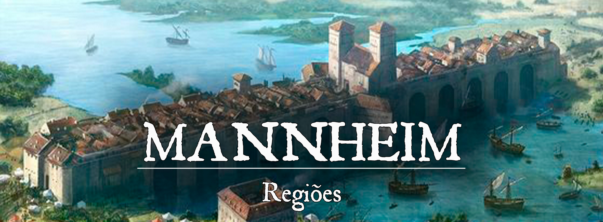

Mannheim
Descrição
Localizada sobre o Rio do Ramo, essa pequena cidade serve de entreposto comercial, tanto terrestre como fluvial. A maior parte de seus moradores investe seu tempo em relações comerciais ou administrativas. Conhecida pela grande quantidade de visitantes de outras partes do mundo, Mannheim é um grande centro de pluralidade cultural, e também uma cidade famosa por sua hospitalidade para aqueles com moedas. A cidade possui uma guarda atenta patrulhando frequentemente dentro das muralhas.
Descrição Visual:
024cfaddedc38abc494dcabcf72e88a4.jpg |Mannheim
{kind=link}
Mannheim é, em poucas palavras, uma cidade-ponte que cruza o rio. Sua extensão é limitada e a cidade se expande apenas para fora das muralhas. Aos seus arredores, campos verdes com pequenas propriedades de agricultura e pecuária familiar. A parte interna de Mannheim conta com prédios altos e bem estruturados, ruas pavimentadas e largas o suficiente para duas carroças passarem, e portos lotados de navios pequenos e médios.
Sociedade
População:
Os humanos são os mais numerosos em Mannheim, seguido pelos anões, halflings e elfos. Por conta de sua grande quantidade de visitantes, muitas outras raças podem ser vistas na cidade.
Cultura:
Muitos dos moradores de Mannheim na verdade são mercadores, novos e antigos, que buscam prosperar com o mercado da cidade. Para eles, nenhuma recompensa será alcançada sem esforço, as oportunidades precisam ser abraçadas, sejam elas quais forem. Esses mercadores dedicam seus tempos correndo atrás de novos investimentos para Mannheim e para si. São poucos os que decidem apostar em atividades ilegais, que normalmente são vistas como desonrosas, mas seguindo o lema dos mercadores de Mannheim… também são oportunidades a serem abraçadas.
Caráter:
A maioria dos moradores da parte interna de Mannheim está mais preocupada com seu próximo negócio. Todos são bem-vindos, e mais ainda se tiverem algumas moedas para gastar.
Datas e Festividades:
Religião:
A fé em Vesunna é a religião oficial de Mannheim. Deuses como Finnan, Rangel e Caenis também são enormemente cultuados em Mannheim. A adoração de deuses malignos não é ilegal em Mannheim, no entanto, seguidores de tais divindades evitam expor seus ideias mesmo assim.
Economia
Mannheim exerce fiscalização e pedágio sobre as mercadorias e pessoas que por ela passam. Embora pequena, tem diversas tavernas para poder acolher os viajantes. A pesca também é uma prática importante para a economia da cidade.
Serviços:
Governo
Mannheim é governada pelo Barão da Passagem, um título que é passado hereditariamente.
Poderio Militar:
A parte interna de Mannheim é severamente protegida por seus soldados. As muralhas são patrulhadas dia e noite e ninguém passa pelos portões sem antes fazer a fiscalização e pagar o pedágio. Os soldados de Mannheim são conhecidos por utilizarem martelos de guerra como suas principais armas.
Conflito
Os navios que chegam e partem de Mannheim costumam sempre levar alguns mercenários e aventureiros consigo. A viagem pelo Rio do Ramo nem sempre é segura, e Afogadores espreitam por boa parte do percurso. Os monstros são ousados com navios pequenos, e os atacam mesmo que estejam protegidos
Organizações Relevantes
Locais Relevantes
O Porto de Mannheim: é um local importante para a economia da cidade, pois é onde os navios e embarcações chegam e partem com suas mercadorias. É um lugar movimentado e agitado, com uma constante atividade de carregamento e descarregamento de mercadorias. O porto é protegido pelas muralhas da cidade e patrulhado constantemente pela guarda local para garantir a segurança das embarcações e dos viajantes.
O porto possui diversas docas onde os navios podem atracar e descarregar suas mercadorias. Há armazéns e galpões onde as mercadorias são armazenadas e distribuídas para os comerciantes da cidade. Há também tavernas e bares para os viajantes e tripulantes descansarem e se alimentarem.
O porto é um lugar importante para os pescadores da cidade também, pois é onde eles vendem seus peixes e frutos do mar para os comerciantes e para o consumo local. A cidade conta com um líder dos pescadores, que é responsável por organizar e garantir a segurança dos pescadores e das suas embarcações, e garantir que a pesca seja realizada de forma responsável e sustentável.
Além disso, o porto é um lugar importante para os aventureiros e mercenários que chegam e partem da cidade, pois é onde eles podem encontrar trabalhos e oportunidades de emprego, e também é onde eles podem encontrar navios que os levarão para outras regiões. É um lugar onde se encontra várias raças e culturas, e é onde se encontra possíveis contatos para missões e trabalhos.
NPCs Relevantes
ac73ee80964d103eef9482fa296ec894.jpg |Altair Gawne, o Barão da Passagem
{kind=link}
Altair Gawne, o Barão da Passagem: Altair Gawne é o atual Barão da Passagem de Mannheim, um título hereditário que é passado de geração em geração. Ele é responsável por garantir a segurança e o progresso da cidade, e tem o poder de tomar decisões importantes para o bem-estar dos moradores. Ele é respeitado e tem uma grande influência entre os comerciantes e líderes políticos da cidade. Ele tem uma visão estratégica e ambiciosa para o futuro de Mannheim, e trabalha duro para aumentar sua riqueza e poderio. Ele é um homem justo e honesto, mas não tem medo de tomar decisões duras quando necessário. Ele é um líder carismático e tem uma boa relação com sua equipe de governo e a guarda da cidade. Ele também é conhecido por ser um homem de negócios astuto e sempre está em busca de novas oportunidades para o crescimento econômico de Mannheim.
Erik, o Mestre Pescador: O Líder dos Pescadores é um homem experiente e habilidoso, que passou a maior parte de sua vida trabalhando no rio. Ele é conhecido por sua dedicação e conhecimento sobre as condições climáticas e a vida marinha, e é considerado um especialista em pesca. Ele é líder de um grupo de pescadores que trabalham juntos para garantir que a economia da cidade esteja sempre em dia, fornecendo peixes e frutos do mar para a cidade. Ele é respeitado e tem boas relações com os outros líderes da cidade, especialmente com os comerciantes, que dependem da sua equipe para suprir seus negócios. Ele é um homem calmo e tranquilo, mas também tem um lado forte e decidido, e não tem medo de tomar decisões difíceis para proteger seus homens e a cidade. Ele é conhecido por usar roupas simples, como calças largas e camisas de algodão, e sempre usa seu chapéu de aba larga, que protege seu rosto do sol quando esta pescando.
Irmã Isabella: A Líder Religiosa é uma mulher sábia e carismática, que dedicou sua vida à religião de Vesunna, a religião oficial de Mannheim. Ela é uma sacerdotisa experiente e respeitada, que tem muita influência na cidade, especialmente entre os mais devotos e conservadores. Ela é conhecida por sua bondade e sabedoria, e é sempre disponível para aconselhar os moradores e ajudar os necessitados. Ela tem boas relações com os outros líderes da cidade, incluindo o Barão da Passagem, e trabalha para manter a harmonia entre as diferentes crenças religiosas na cidade. Ela é também uma lider espiritual para os seus seguidores, e é considerada como uma figura de orientação, e como tal, sempre está presente nas principais cerimônias religiosas da cidade. Ela é vista frequentemente usando trajes tradicionais sacerdotais, como túnicas brancas e adornos de prata. Ela é conhecida por ter cabelos longos e castanhos, e seus olhos são de cor azul claro, e sempre tem um sorriso no rosto.
Origem
A ponte de Mannheim foi construída sob as ordens de Kotka para servir como passagem para Rúbria (a qual os kotkanos vinham explorando nos últimos anos). O rei kotkano precisou contratar mão de obra estrangeira, pois a maioria dos homens estavam ocupados explorando Rúbria. A construção da ponte começou imediatamente quando um grupo foi reunido, com o engenheiro Edwin var Pallis encarregado de comandar a obra.
Com o talento dos trabalhadores estrangeiros, a ponte ficou pronta em pouquíssimo tempo. No entanto, os homens não receberam seu pagamento após terminarem a obra, pois o rei kotkano ainda não tinha reunido os fundos para pagá-los. O pagamento foi prometido apenas quando a expedição em Rúbria terminasse, o que poderia custar anos de espera. Essa decisão revoltou os trabalhadores, mas Edwin var Pallis foi consumido por um ódio irracional. Sua raiva foi tão grande, que Pallis reuniu os homens que ergueram a ponte para pegar o pagamento de Kotka à força, saqueando caravanas e viajantes que iam para Rúbria ou que estavam voltando.
Pallis e seus homens ficaram conhecidos como a Irmandade da Ponte, todos criminosos violentos e consumidos pelo desejo e vingança. Muitos dos homens da Irmandade lutaram por anos ao lado de Pallis, mas outros decidiram voltar às suas famílias e contentaram-se que não seriam pagos. Eventualmente, outros criminosos se juntaram à Irmandade da Ponte, mas sem nenhum desejo real de vingança. A Irmandade foi se tornando cada vez mais violenta e, aos poucos, foi perdendo seu real propósito. Pallis não roubava apenas dos kotkanos, mas de qualquer um que tivesse o azar de encontrá-lo. A terrível campanha da Irmandade da Ponte durou até a morte de Pallis pelas mãos de aventureiros destemidos.
Após a morte de Pallis, a ponte de Mannheim estava quase deserta, com pouquíssimas almas vivendo nela. Essas pessoas, no entanto, aproveitaram o fim da Irmandade da Ponte e começaram a estabelecer a ordem em Mannheim, criando acordos comerciais com cidades vizinhas e fortalecendo suas próprias muralhas.